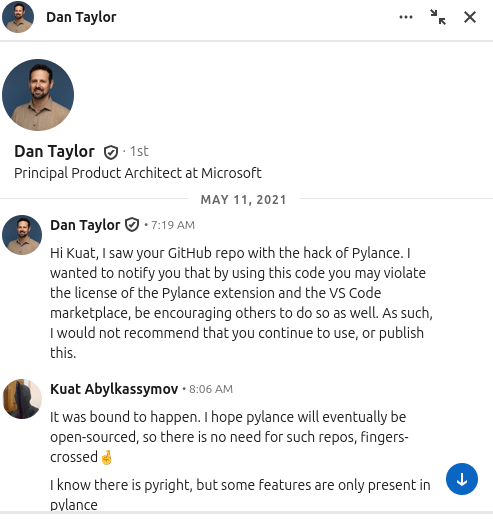

Introduction / The speaker
LSP × . How editors understand code.
{ code } call type ref 40 seconds. The talk covers the editor architecture first, then today’s Python tooling and applications to AI. The main talk is about 20 minutes; references and live demo are backup material. Transition: Introduce yourself briefly, then establish the rename problem before defining the technologies.
Introduction / About me
Kuat Abylkassymov Backend developer · [qazcode]
[kabylkassymov@beeline.kz]
30–45 seconds. Introduce yourself, your role and Aventa, then use your three posts as a personal opening. The portrait is unchanged. The screenshots have been edited into a light theme and retain the supplied order. The portrait and quote screenshots load from local files in assets/. Advance three times to fade in the quotes individually, in their supplied order. Move into the technical material after this short introduction.
01 / The problem
Code is text. Editing needs structure.
from features import normalize
values = normalize([2.0, 4.0])
label = "normalize the inputs"
def preview(normalize):
return normalize[:5]Rename the imported function. Which occurrences should change?
45 seconds. The import and call refer to the function in features.py. The string is plain text and the parameter shadows the imported name. Text search discovers candidates; it does not establish symbol identity. This example is runnable in examples/. Transition: We need to distinguish code structure from matching text. Here are the three questions that organize the talk.
01 / The problem
What does a code tool need to know?
Structure: where does this call begin and end?Relationships: which function does this name refer to?Feedback: did the edit break anything?
We’ll answer these in the editor, then apply them
30 seconds. State the audience promise: by the end, you should be able to explain what Tree-sitter contributes, what a language server contributes, and where ty, Ruff and uv fit. The rename example is the thread through the talk. Transition: begin with a short regex joke, then ask whether a text pattern can reliably find the call.
02 / Structure · Tree-sitter
Speaking of regex…
Kuat Abylkassymov · 8 February 2023
10–15 seconds. Pause for the joke: Регулярно means regularly, echoing regular expressions. This is your own post, shown as a cleaned high-resolution edit with the left divider removed. Keep it a short personal beat, not another technical explanation. Transition: regex is useful in everyday work. Let us see what happens when we use a text pattern to find a nested function call.
02 / Structure · Tree-sitter
Text matches aren’t syntax matches.
Find complete calls to normalize.
result = normalize(clean(values), mode=")")
example = "normalize(fake)"
# normalize(old_values)Regex: normalize\([^)]*\)This pattern matches What went wrong?
normalize(clean(values)Stops at the nested call’s closing parenthesis normalize(fake)Matches text inside a string normalize(old_values)Matches text inside a comment
About 50 seconds. This is a concrete failure of the displayed Python re pattern, not a claim every regular expression fails on every program. It is not a comparison against an entire TextMate grammar, which can maintain nested scopes and embedded-language rules. The negated character class stops at the first closing parenthesis, so it truncates a nested call. The pattern also has no Python string or comment context. Switching greediness does not supply a language grammar. You can build increasingly elaborate patterns for restricted cases, but nested constructs, escaping, multiline strings and new syntax increase maintenance cost. Regex remains excellent for text search, simple token patterns and prefiltering; this is about structural reliability, not a speed benchmark. Transition: the pattern sees characters. To match complete constructs consistently, let a language grammar identify the structure.
02 / Structure · Tree-sitter
From characters
BUILD TIME Grammar → parser
↓ RUNTIME Source → syntax tree
↓ AFTER AN EDIT Reuse valid structure
Source ranges. Concrete syntax. Incremental updates.
45 seconds. Separate parser generation from the embedded runtime. A parser is language-specific. Named-node traversal omits anonymous punctuation for convenience, but the concrete tree retains token structure. The tree is not a symbol table or a type checker. Transition: Let us inspect the concrete tree for the same Python call.
02 / Structure · Tree-sitter
Tree-sitter: inspect the call
(call
function: (identifier)
arguments: (argument_list
(list
(float)
(float))))Named nodes from the Python grammar.
Concrete syntax trees also represent punctuation; omitted here.
60 seconds. This is a named-node view of the expression, not a full module tree. The identifier range points to normalize. The tree identifies a call but does not resolve which normalize this is. The query and node types depend on the language grammar. Transition: Once we have nodes and ranges, we can ask structural questions instead of constructing a more elaborate text pattern.
02 / Structure · Tree-sitter
Match the call, not its spelling in text.
TREE-SITTER QUERY · PYTHON GRAMMAR
((call
function: (identifier) @callee
arguments: (argument_list) @args) @call
(#eq? @callee "normalize"))CAPTURED SOURCE
@call → normalize(clean(values), mode=")")
@args → (clean(values), mode=")")Nested calls stay intact. Strings and comments aren’t call nodes.
Regex searches characters; Tree-sitter queries grammar-defined nodes.
Sources: Query structure · Predicates
About 60 seconds. The Python grammar identifies actual call nodes and nested argument lists, including the closing parenthesis inside the string literal. @call captures the full call; @args captures the entire argument list. #eq? filters the callee identifier text to normalize, so the inner clean call is excluded. The fake examples are string and comment nodes, so neither matches a call pattern. Common higher-level bindings support this predicate; the C query API itself exposes predicates for consumers to evaluate. This pattern covers direct identifier calls, not obj.normalize(...), aliases or dynamic calls. Syntax structure is more reliable than ad hoc text patterns for this task, but grammar support and parse recovery still matter. Tree-sitter does not prove symbol identity or replace a type checker. Regex can also be useful inside a Tree-sitter #match? predicate after the syntax has selected the right node. Transition: This is useful for a static file, but editors also need to keep that structure current while we type.
02 / Structure · Tree-sitter
What happens during an edit?
Before: normalize([2.0, 4.0])
During: normalize([2.0,
After: normalize([2.0, 8.0])Update the old tree’s positions for the edit. Parse the new source, supplying that edited tree. Reuse syntax structure where possible. Error recovery keeps incomplete code useful to editor features.
60 seconds. Tree-sitter is a parser generator and an incremental parsing runtime. Do not promise it only reparses changed characters: an edit can invalidate a larger area depending on grammar and context. ERROR and missing nodes help represent incomplete code. Reusing syntax structure is not the same as rerunning only affected queries. Transition: an editor can also encounter several languages inside one file. The same structural approach extends to those embedded regions.
02 / Structure · Tree-sitter
More than mixed-language colors.
Both TextMate and Tree-sitter support mixed-language highlighting.
EXAMPLE.HTML
<style>
.score { color: teal; }
</style>
<h1 class="score">Score</h1>
<script>
const score = 42;
</script>TextMate Tree-sitter
Tokens with scopes Syntax nodes with source ranges Embedded-language grammars Embedded-language syntax trees
Tree-sitter’s embedded trees can also support queries and structural selection.
Sources: Tree-sitter injections · TextMate embedded languages
45 seconds. Both TextMate and Tree-sitter can highlight JavaScript and CSS inside HTML. Merely showing colored embedded code does not distinguish the two. TextMate uses grammar rules, nested scopes and embedded-language support; it is substantially more capable than the isolated regex in our earlier example. Tree-sitter models a host tree and injected language trees. The additional benefit is queryable syntax nodes and source ranges that editor features can reuse to select arguments or inspect calls inside the embedded language. Structural selection and navigation still require an integration; do not promise every feature automatically works or that Tree-sitter is always faster or more accurate. Markdown code fences are another application, but not unique to Tree-sitter. The optional examples/mixed_languages.html demonstration should inspect embedded syntax structure as well as colors. Transition: syntax trees can describe several languages in one file, but they still do not resolve which imported function a name denotes. Return to normalize to introduce language services.
03 / Relationships · LSP
We found a call. Which function is it?
Tree-sitter LSP + a language server “What is this construct?” “What does this refer to?” Syntax nodes and source ranges Definitions, types and references Useful while code is incomplete Uses project and language analysis
A syntax tree identifies the call.
45 seconds. Return to the opening normalize call. We can now identify its syntax and argument range, but a syntax tree alone does not establish which imported definition it refers to. Introduce semantic language services as the next layer. LSP is the protocol used to ask those services questions; the server performs the analysis. A server can use Tree-sitter or a different parser. Transition: how can several editors share that language intelligence without each rebuilding it?
03 / Relationships · LSP
One protocol. Fewer integrations.
BESPOKE INTEGRATIONS M × N 3 editors × 4 languages = 12
→ SHARED PROTOCOL M + N 3 clients + 4 servers = 7
Editor A Editor B Editor C
⟷
LSPshared contract
⟷
Python TypeScript Scala Rust
M = editors, N = languages. Idealized integration cost, not a runtime speedup.
60 seconds. Before a shared contract, each editor and language pair may need bespoke integration. With LSP, each editor implements a client and each language implements a server. Adding one editor now means one client rather than four language integrations. Real clients still need capability handling, launch configuration and occasionally adapters; LSP does not eliminate every integration cost. Transition: The shared contract is a conversation. Let us follow what the client and server actually exchange.
03 / Relationships · LSP
A conversation, not magic
An LSP conversation between a client and a language server
Time flows downwards. The client sends initialize with capabilities; the server responds with its capabilities. The client sends initialization and document notifications, then a hover request. The server responds with type information, signatures or documentation.
Editor / client Language server
initialize · client capabilities result · server capabilities
initialized · didOpen · didChange
textDocument/hover · position result · type / signature / docs
REQUEST RESPONSE NOTIFY REQUEST RESPONSE
JSON-RPC 2.0 · Requests have IDs; notifications have no response.
50 seconds. initialize is a request, initialized a notification. didOpen and didChange follow negotiated synchronization settings. Diagnostics may be push or pull. A server is commonly a local process over standard input/output; server does not mean cloud. Features must be advertised by both sides where required. Transition: Here is one of those requests as a concrete JSON-RPC message.
03 / Relationships · LSP
A real request shape
Ask about normalize on line 3 of analysis.py.
{
"jsonrpc": "2.0",
"id": 7,
"method": "textDocument/definition",
"params": {
"textDocument": {"uri": "file:///project/analysis.py"},
"position": {"line": 2, "character": 10}
}
}Zero-based positions. Stream framing headers omitted.
60 seconds. This body is valid JSON-RPC. The character offset is inside the function name. The server can return a location in features.py, multiple locations, LocationLinks, or null. Character units depend on negotiated encoding, UTF-16 by default. Requests have IDs; notifications do not receive responses. Transition: We have the structure and the protocol. Let us use them to solve the opening rename problem in the editor.
04 / See it work · Editor
Live demo: the rename
examples/analysis.py · Editor + Python parser + ty
Inspect the syntax tree — locate the call and arguments.
Go to definition — follow the symbol.
Rename to scale_features — edit its uses.
Check the string and local parameter; inspect a type error.
Use your editor’s tree inspection and LSP actions. The deck itself does not run a server.
Allow about three minutes. Switch to the editor. Start on the normalize call, not the preview parameter. Inspect the syntax tree, return to the source, request a definition, return, then rename across files. Review features.py, analysis.py and check_scaling.py; the label string and preview parameter must stay unchanged. Show an argument-type error with a string input, then restore a valid input before running the scaling checks. If the live session fails, narrate these four steps using the slide. See PRESENTER_GUIDE.md for exact commands and preparation. Transition: we have seen the capabilities; which tools provide them for our Python team?
05 / Choose the tools · Python
LSP is an interface, not a feature list
Tool Language / role What it exposes tsgo / native TypeScript TypeScript; Go-based implementation Type analysis + LSP language service ty Python Type checking + language services StyLua Lua / Luau formatter Formatting via stylua --lsp Metals Scala Navigation, diagnostics, completion
Servers can expose broad intelligence or a narrow capability such as formatting.
Sources: TypeScript native port · ty · StyLua · Metals
55 seconds. tsgo is the native TypeScript preview executable, not a Go language server; gopls is for Go. The staging repository now says development moved to microsoft/TypeScript, and TypeScript 7 RC and later use the tsc command name. Do not present tsgo as a timeless installation command or conflate the old tsserver protocol with LSP. StyLua really has an LSP mode but it is a formatter, not a full Lua semantic service. Metals integrates Scala build information. Snapshot checked 2026-10-15. Transition: These implementations provide different capabilities. For our Python work, we need to compare the actual semantic servers.
05 / Choose the tools · Python
Python: the Pyright family
Option Why consider it? Trade-off Pyright Open-source checker + language server; CLI and editor analysis Pylance adds features beyond the core server Pylance VS Code language experience built on Pyright Closed-source extension; no standalone CI checker basedpyright Pyright fork with extra diagnostics, inlay hints and semantic highlighting Stricter defaults; configure or baseline adoption
Compare editor features and CI behavior separately. Snapshot: 15 October 2026.
Sources: Pyright · Pylance · basedpyright
70 seconds. Pyright provides CLI type checking and a server. Pylance uses that engine but is a distinct VS Code extension with additional editor integration and bundled stubs. Results can differ because of versions, configuration and stubs. basedpyright is a fork with independent changes, not an identical distribution. It documents recommended mode and baselining. Choose based on the editors the team actually supports; no universal accuracy or performance ranking is implied. Transition: The distinction between Pyright and Pylance also affects portability; here is a historical example.
05 / Choose the tools · Python
Open protocol. Different implementations.

Conversation dated 11 May 2021 · Screenshot supplied by the presenter
Protocol ≠ product
LSP standardizes communication.
Pylance and Pyright are distinct products, with different distribution models and editor features.
Historical context for the portability discussion.
About 45 seconds. Show the complete screenshot supplied by the presenter, including Kuat’s response. The image is dated 11 May 2021 and is presented as historical context, not as verification of current licensing terms or an independently authenticated record. Connect it to the preceding comparison: an open protocol does not imply an open-source implementation. Pyright’s open-source analysis engine and Pylance’s editor product are distinct. Avoid treating the message as a current legal interpretation. Transition: beyond the Pyright family, there are also independent analyzers and a plugin-based server.
05 / Choose the tools · Python
Python: other current options
Option Architecture / emphasis What to evaluate ty Astral; Rust checker + language server; fine-grained incremental analysis Type behavior, navigation and notebooks on your projects Pyrefly Meta; Rust checker + language server; navigation and refactorings Editor parity; notebook support is documented as experimental pylsp Python server with Jedi and optional plugins Flexible composition; type checking and refactoring depend on plugins
All provide language services; architecture alone does not establish speed or correctness.
Sources: ty features · Pyrefly features · pylsp
70 seconds. ty currently documents completion, definitions, references, rename, diagnostics and notebook support; do not describe it as only a command-line checker. Its fine-grained incrementality is a vendor-documented design, not our benchmark. Pyrefly documents comparable language services and code actions, with notebook support still marked experimental on the fetched page. pylsp uses Jedi for core navigation and completion, with Rope and other optional providers; a unified static checker is not its built-in default architecture. Snapshot 2026-10-15. Our recommendations are evaluation criteria rather than a measured state-of-the-art leaderboard. Transition: These are semantic server options. Ruff and uv are often mentioned alongside them, but solve different parts of the workflow.
05 / Choose the tools · Python
ty, Ruff, uv: different problems
Tool Question it answers Interface ty Are these types and symbol uses consistent? ty check + language serverRuff Which lint rules fail? How should this code be formatted? ruff check, ruff format, ruff serveruv Which Python, dependencies and environment run this project? uv sync, uv run; package/project management
One team can use all three together.
Sources: ty · Ruff · uv
65 seconds. These are complementary Astral tools, not three competing LSPs. ty handles types and semantic language features. Ruff is a linter and formatter; it catches many bugs but is not a full static type checker or navigation server. uv manages interpreters, dependencies, lockfiles and execution environments. It can launch the other tools without replacing their analyses. Ruff’s native server replaces the older ruff-lsp; use current ruff server integration. Transition: Assign each problem to the tool responsible for it, using one small Python example.
05 / Choose the tools · Python
Which tool fixes which failure?
55 seconds. This is an illustrative ownership example, not recorded tool output. Ruff F401 catches the unused import. A static checker with this annotation should flag the argument mismatch. uv does not infer the intended input type or fix program logic. A type checker generally cannot prove that a list is non-empty from this signature, so the empty-input bug still requires behavior validation. Missing imports may also be a wrong editor environment or package path, not an absent package. Transition: Because their responsibilities differ, we can compose them into a single development stack.
05 / Choose the tools · Python
A Python stack that fits together
uv-managed project environment
├── ONE primary semantic language server
│ ty / basedpyright / Pyright / Pyrefly / Pylance
├── Ruff: lint, fixes, formatting
└── tests: runtime and domain behaviorMatch the editor interpreter to the project environment.
For a ty-based project: uv run ty check · uv run ruff check
55 seconds. This is our integration recommendation, not a claim the named tools are interchangeable. Existing VS Code teams may keep Pylance and add Ruff. Mixed-editor teams can evaluate basedpyright or a Rust-based server using the same representative projects. Avoid duplicate diagnostics and competing rename/completion providers; intentional split configurations are possible. uv sync prepares dependencies, but configure the server to resolve that same environment. In Conda-heavy GPU workflows keep the environment strategy appropriate to the project rather than implying a forced migration. Transition: The best fit depends on our codebase. Compare these options using the same environment and representative tasks.
05 / Choose the tools · Python
Choose with a representative Python repo
Use the same Python, dependencies and annotations. Try navigation, rename, completion and notebooks. Compare useful diagnostics and false positives. Measure cold start, edit latency and memory. Check editor/CI agreement and maintenance cost. Include your pandas/NumPy/Pydantic usage, monorepo imports and notebook workflows.
50 seconds. This is an evaluation protocol, not an endorsement based on vendor microbenchmarks. Track incomplete results and missed callers as well as latency. Pin versions and configuration when comparing tools. Notebook support is partly client-dependent. For AI, hold model, task and tests constant and compare correctness, context size and tool latency across repeated runs. Transition: So far, the human in the editor asks the questions. What changes if an AI agent asks those same questions?
06 / Apply it to AI
Give AI a way to
Context Scope Feedback Follow definitions and inspect types Find references before editing Collect diagnostics after editing Resolve which symbol a name denotes Identify likely callers and edit locations Give the agent concrete repair evidence
An AI application can act as an LSP client,
65 seconds. An LLM can generate a plausible name without checking that it exists or infer the wrong signature. Tools let it inspect those assumptions. This is an architecture, not a claim all coding agents use LSP. A bridge manages process lifecycle, project roots, document state and result size. The model still plans and interprets results. Transition: Start with context: combine code boundaries with symbol relationships to retrieve relevant material.
06 / Apply it to AI
Better context for code retrieval
Tree-sitter LSP server AI application
─────────── ────────── ──────────────
Functions, classes → Definitions, types → Focused context
Imports + ranges References Relevant tests
Task + budgetRetrieve boundaries and relationships.
Keep paths and ranges; refresh after edits. Ranking remains an application concern.
55 seconds. Structural chunks reduce arbitrary splits; semantic queries can resolve names and follow dependencies. Text search and embeddings remain useful for concepts and documentation. Huge functions still need chunk limits. Syntax-aware chunking or LSP tools do not by themselves guarantee lower context size or better model accuracy; evaluate those outcomes. Transition: Once the agent edits that code, it needs feedback rather than assuming its proposed change is correct.
06 / Apply it to AI
Inspect → edit → check → repair
Task: update a feature-extraction API
1. Inspect definitions, types, references
2. Edit the API and its callers
3. Collect fresh diagnostics + run tests
4. Repair the mismatch and check againExpected DataFrame; received ndarray Illustrative diagnostic. Coverage depends on annotations, library stubs and configuration.
65 seconds. A function now expects a DataFrame to preserve column names but a caller passes an ndarray. A server can report that only if it can establish those types. The agent inspects whether to preserve labels or convert data. Validate diagnostic versions, limit retries and inspect the final diff. Tests should check column order, null handling and numerical behavior, not just type consistency. Transition: This loop provides useful evidence, but we must understand the blind spots of every tool involved.
06 / Apply it to AI
Useful signals, different blind spots
Tool Useful signal Practical limit Tree-sitter Syntax + ranges Symbol identity needs extra analysis LSP server Language-aware answers Depends on capabilities, stubs and setup Tests / execution Behavior on exercised cases Coverage and runtime state matter AI model Plans and proposed changes Needs evidence and verification
Notebook cell order, dynamic DataFrame schemas and data leakage go beyond static type checks.
55 seconds. Static services cannot know arbitrary live kernel values or validate experimental design. A DataFrame type does not establish column schema or correct train/test separation. Library plugins and typing coverage differ across checkers. LSP can also expose folding or semantic highlighting; Tree-sitter-based tools can add semantic analysis. Avoid treating syntax-versus-semantics as a strict feature partition. Transition: Return to the opening question and summarize what each layer contributes to the answer.
Conclusion / Answering the opening question
Structure.Relationships. The rename needs more than matching text:
40 seconds, then questions. Return explicitly to the opening normalize example. Tree-sitter can identify call syntax and distinguish it from a string or comment. A language server can resolve definitions and propose edits to symbol references, subject to its analysis limits. Diagnostics and tests provide evidence about the result. These same tools can help an AI agent inspect its assumptions. Final answer: code tools need structure, relationships and feedback. Ask the audience which of those capabilities is missing from their current workflow. The remaining slides are optional historical context, sources and demo backup material.
Appendix / Sources
References: foundations
AI workflows are proposed designs; performance gains were not benchmarked.
Backup. Established 3.17 protocol concepts are used without claiming this is the latest specification. Use the linked official docs for exact schemas.
Appendix / Sources
References: Python landscape
Documentation snapshot: 15 October 2026. Recheck capabilities before presenting.
Backup. The comparison describes roles and documented features, not a measured ranking. See PYTHON_TOOLING.md for the rationale and team evaluation checklist.
Appendix / Sources
References: other languages
Backup. Names, flags and release status change. StyLua exposes formatting only; this is a useful demonstration that LSP does not imply a full semantic feature suite.
Appendix / Demo backup
A five-minute editor demo
Open examples/analysis.py. Inspect the Python syntax tree at the call. Jump to definition; inspect the type of values. Rename normalize to scale_features across files. Verify the string and preview parameter stayed. Run python examples/check_scaling.py. Requires Python editor support; tree inspection requires a Tree-sitter integration.
Optional live demo or a 60-second walkthrough. Tree-inspection UI and commands depend on the editor and plugins; avoid promising a portable shortcut. LSP support and Tree-sitter are separate installations. The deck does not run a server or parser itself. If the live demo fails, use the before/after slides. Verify every changed file including the test.
Final image supplied by the presenter. End on the joke without additional explanation.